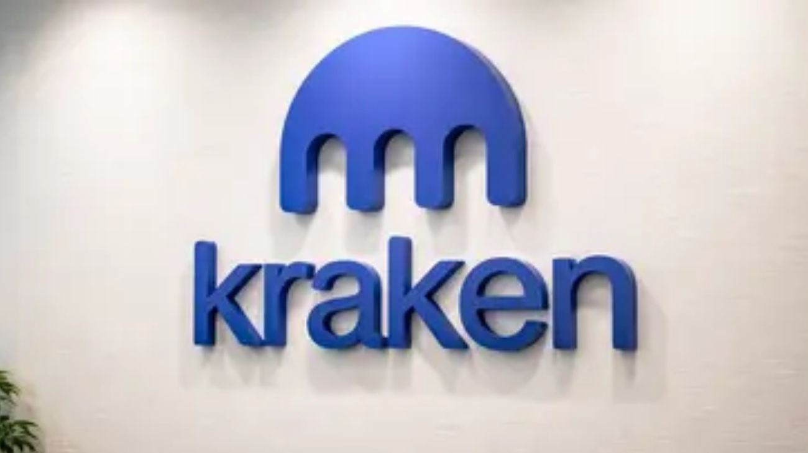

Kraken llega oficialmente a Argentina: registro ante la CNV, depósitos en pesos y tres aplicaciones distintas
El exchange fundado en 2011 y con más de US$1.000 millones de volumen diario global desembarca con una estrategia de compliance total, posicionándose como el primer operador cripto de escala mundial con registro formal ante el regulador argentino.

Kraken, uno de los exchanges de criptomonedas más antiguos y robustos del mundo, inició operaciones oficiales en Argentina tras obtener su registro como Proveedor de Servicios de Activos Virtuales (PSAV) ante la Comisión Nacional de Valores. La plataforma, fundada en 2011, cuenta con más de 600 activos digitales disponibles y un volumen diario de trading que supera los US$1.000 millones a nivel global. A diferencia de otros exchanges que operan en el país de manera parcial o sin encuadramiento regulatorio, Kraken eligió un modelo de compliance total desde el primer día, alineado con su estrategia en cada mercado donde opera. La operación local es liderada por Sebastián Camiser como Head of Regional Growth para Argentina y LATAM hispanohablante.
El desembarco incluye tres aplicaciones diferenciadas para distintos perfiles de usuario. La primera es la plataforma principal de Kraken para compra y venta de criptomonedas, orientada al inversor minorista. La segunda es Kraken Pro, una plataforma de trading avanzado con herramientas de análisis, sistema de fidelidad por puntos y comisiones más bajas para operadores activos. La tercera es Krak, enfocada en pagos y gestión de activos digitales para empresas, aunque su integración completa está en proceso. Para fondear las cuentas en pesos, los usuarios tienen tres vías disponibles: transferencia bancaria a CBU recaudador desde una cuenta del mismo titular, con validación por CUIT. A futuro, la empresa analiza incorporar tarjeta de débito, cashback por compras y pagos mediante QR en comercios argentinos.
Argentina no es un mercado elegido al azar. El país lidera la adopción de criptomonedas per cápita en la región, con el 12,4% de la población utilizando activos digitales, y cuadruplicó su base de usuarios activos mensuales respecto al ciclo alcista de 2021. El fenómeno ya va más allá de la cobertura inflacionaria: los argentinos usan cripto para cobros del exterior, pagos internacionales, arbitraje cambiario y acceso a servicios globales. Kraken también habilitó cuentas para empresas, con servicios de custodia institucional y staking, y un esquema de atención diferencial para clientes de alto patrimonio bajo la modalidad Kraken VIP.
El ingreso de Kraken al mercado local se produce en un contexto donde el gobierno de Milei impulsó la regulación del sector cripto como parte de su agenda de apertura y modernización financiera. La CNV viene registrando activamente a exchanges internacionales como PSAV, creando un marco que da certeza jurídica a las plataformas y protección a los usuarios. Para el inversor argentino, la llegada de Kraken amplía el ecosistema disponible con un operador de primera línea mundial, seguridad de nivel institucional —autenticación de dos factores y almacenamiento en frío para la mayoría de los fondos— y acceso a más de 350 activos digitales con depósitos directos en pesos.